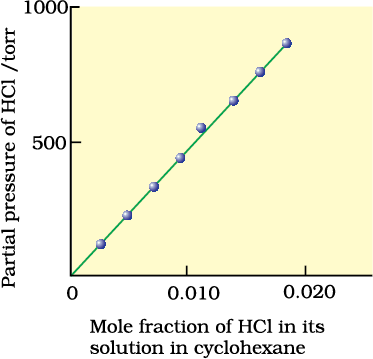

Solubility of a substance is its maximum amount that can be dissolved in a specified amount of solvent at a specified temperature. It depends upon the nature of solute and solvent as well as temperature and pressure. Let us consider the effect of these factors in solution of a solid or a gas in a liquid.
Every solid does not dissolve in a given liquid. While sodium chloride and sugar dissolve readily in water, naphthalene and anthracene do not. On the other hand, naphthalene and anthracene dissolve readily in benzene but sodium chloride and sugar do not. It is observed that polar solutes dissolve in polar solvents and non polar solutes in non-polar solvents. In general, a solute dissolves in a solvent if the intermolecular interactions are similar in the two or we may say like dissolves like.
When a solid solute is added to the solvent, some solute dissolves and its concentration increases in solution. This process is known as dissolution. Some solute particles in solution collide with the solid solute particles and get separated out of solution. This process is known as crystallisation. A stage is reached when the two processes occur at the same rate. Under such conditions, number of solute particles going into solution will be equal to the solute particles separating out and a state of dynamic equilibrium is reached.
Solute + Solvent Solution
At this stage the concentration of solute in solution will remain constant under the given conditions, i.e., temperature and pressure. Similar process is followed when gases are dissolved in liquid solvents. Such a solution in which no more solute can be dissolved at the same temperature and pressure is called a saturated solution. An unsaturated solution is one in which more solute can be dissolved at the same temperature. The solution which is in dynamic equilibrium with undissolved solute is the saturated solution and contains the maximum amount of solute dissolved in a given amount of solvent. Thus, the concentration of solute in such a solution is its solubility.
Earlier we have observed that solubility of one substance into another depends on the nature of the substances. In addition to these variables, two other parameters, i.e., temperature and pressure also control this phenomenon.
The solubility of a solid in a liquid is significantly affected by temperature changes. This, being dynamic equilibrium, must follow Le Chateliers Principle. In general, if in a nearly saturated solution, the dissolution process is endothermic (∆sol H > 0), the solubility should increase with rise in temperature and if it is exothermic (∆sol H < 0) the solubility should decrease. These trends are also observed experimentally.
Pressure does not have any significant effect on solubility of solids in liquids. It is so because solids and liquids are highly incompressible and practically remain unaffected by changes in pressure.
Many gases dissolve in water. Oxygen dissolves only to a small extent in water. It is this dissolved oxygen which sustains all aquatic life. On the other hand, hydrogen chloride gas (HCl) is highly soluble in water. Solubility of gases in liquids is greatly affected by pressure and temperature. The solubility of gases increase with increase of pressure. For solution of gases in a solvent, consider a system as shown below. The lower part is solution and the upper part is gaseous system at pressure p and temperature T. Assume this system to be in a state of dynamic equilibrium, i.e., under these conditions rate of gaseous particles entering and leaving the solution phase is the same. Now increase the pressure over the solution phase by compressing the gas to a smaller volume. This will increase the number of gaseous particles per unit volume over the solution and also the rate at which the gaseous particles are striking the surface of solution to enter it. The solubility of the gas will increase until a new equilibrium is reached resulting in an increase in the pressure of a gas above the solution and thus its solubility increases.
Effect of pressure on the solubility of a gas. The concentration of dissolved gas is proportional to the pressure on the gas above the solution.
Henry was the first to give a quantitative relation between pressure and solubility of a gas in a solvent which is known as Henry’s law. The law states that at a constant temperature, the solubility of a gas in a liquid is directly proportional to the pressure of the gas. Dalton, a contemporary of Henry, also concluded independently that the solubility of a gas in a liquid solution is a function of partial pressure of the gas. If we use the mole fraction of a gas in the solution as a measure of its solubility, then it can be said that the mole fraction of gas in the solution is proportional to the partial pressure of the gas over the solution. The most commonly used form of Henry’s law states that “the partial pressure of the gas in vapour phase (p) is proportional to the mole fraction of the gas (x) in the solution” and is expressed as:
p = KHx
Here KH is the Henry’s law constant. If we draw a graph between partial pressure of the gas versus mole fraction of the gas in solution, then we should get a plot of the type as shown in.

Experimental results for the solubility of HCl gas in cyclohexane at 293 K. The slope of the line is the Henry's Law constant, KH.
Different gases have different KH values at the same temperature. This suggests that KH is a function of the nature of the gas.
It is obvious from equation that higher the value of KH at a given pressure, the lower is the solubility of the gas in the liquid. It can be seen from the table that KH values for both N2 and O2 increase with increase of temperature indicating that the solubility of gases increases with decrease of temperature. It is due to this reason that aquatic species are more comfortable in cold waters rather than in warm waters.
| Gas | Temperature/K | KH /kbar | Gas | Temperature/K | KH/kbar |
| He | 293 | 144.97 | Argon | 298 | 40.3 |
| H2 | 293 | 69.16 | CO2 | 298 | 1.67 |
| N2 | 293 | 76.48 | Formaldehyde | 298 | 1.83X10-5 |
| N2 | 303 | 88.84 | Methane | 298 | 0.413 |
| O2 | 293 | 34.86 | Vinyl chloride | 298 | 0.611 |
| O2 | 303 | 46.82 |
Henry’s law finds several applications in industry and explains some biological phenomena. Notable among these are:
• To increase the solubility of CO2 in soft drinks and soda water, the bottle is sealed under high pressure.
• Scuba divers must cope with high concentrations of dissolved gases while breathing air at high pressure underwater. Increased pressure increases the solubility of atmospheric gases in blood. When the divers come towards surface, the pressure gradually decreases. This releases the dissolved gases and leads to the formation of bubbles of nitrogen in the blood. This blocks capillaries and creates a medical condition known as bends, which are painful and dangerous to life. To avoid bends, as well as, the toxic effects of high concentrations of nitrogen in the blood, the tanks used by scuba divers are filled with air diluted with helium (11.7% helium, 56.2% nitrogen and 32.1% oxygen).
• At high altitudes the partial pressure of oxygen is less than that at the ground level. This leads to low concentrations of oxygen in the blood and tissues of people living at high altitudes or climbers. Low blood oxygen causes climbers to become weak and unable to think clearly, symptoms of a condition known as anoxia.
Solubility of gases in liquids decreases with rise in temperature. When dissolved, the gas molecules are present in liquid phase and the process of dissolution can be considered similar to condensation and heat is evolved in this process. We have learnt in the last Section that dissolution process involves dynamic equilibrium and thus must follow Le Chatelier’s Principle. As dissolution is an exothermic process, the solubility should decrease with increase of temperature.